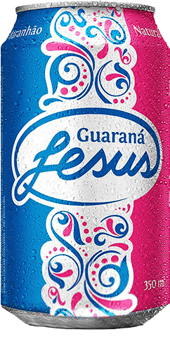

Isso é a verdadeira
SALVAÇÃO!
Guaraná Jesus é um refrigerante de cor rosa com sabor adocicado, lembrando vagamente tutti-frutti, devido a estes serem alegadamente dois de seus 17 ingredientes, e muito popular no estado do Maranhão.
Ver todos os Produtos
